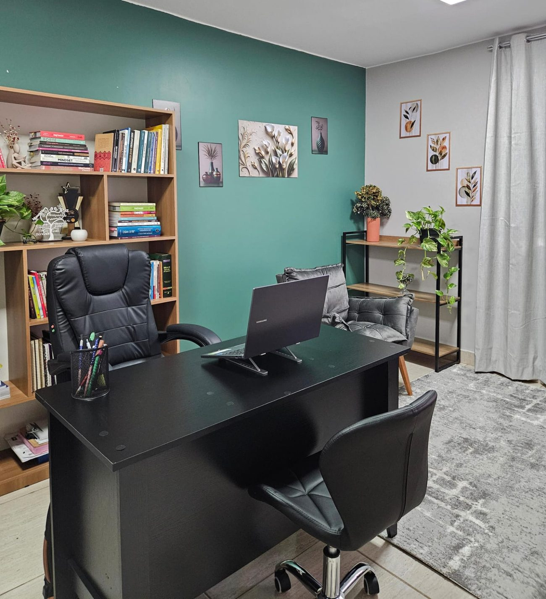
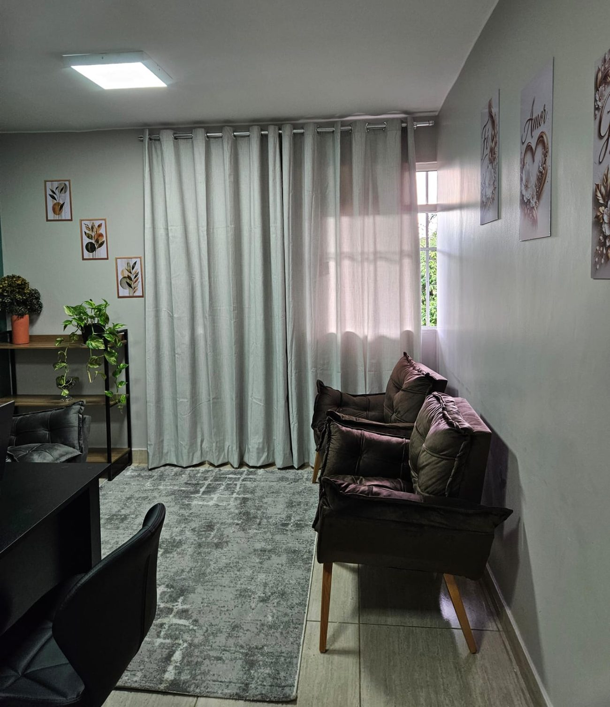

Um espaço seguro para desacelerar, se compreender e construir novos caminhos.
Sou a Silvana, psicóloga em Brasília. Atendo adultos, casais e pessoas idosas, no consultório ou online, unindo ciência, escuta e acolhimento para ajudar você a entender seus padrões e transformar sua forma de viver e se relacionar.
Membra fundadora da Associação de Terapias Cognitivas e Contextuais do Distrito Federal
Talvez você esteja sentindo algo assim
A terapia não é só para momentos de crise. Ela é para qualquer pessoa que queira se compreender melhor. Mas alguns sinais costumam ser um convite para começar.
- Viver no piloto automáticoOs dias passam, as tarefas se acumulam e fica a sensação de que você não está realmente presente na própria vida.
- Ansiedade que não dá tréguaPreocupação constante, mente acelerada, dificuldade para relaxar ou dormir, mesmo quando tudo parece bem por fora.
- Dificuldade de dizer nãoVocê se coloca sempre em último lugar, evita conflitos e sente que suas necessidades nunca têm vez.
- Relações que se repetemBrigas que voltam sempre ao mesmo ponto, escolhas afetivas parecidas, a sensação de viver o mesmo ciclo com pessoas diferentes.
- O corpo falando pela menteDores, tensões e sintomas físicos que aparecem ou pioram em momentos de estresse e sobrecarga emocional.
- Mudanças e perdasLuto, aposentadoria, separação, mudanças de fase. Transições que pedem um espaço para serem elaboradas com cuidado.
Se você se reconheceu em algum desses sentimentos, conversar pode ser o primeiro passo. Sem compromisso e no seu tempo.
Prazer, eu sou a Silvana
Sou psicóloga, registrada no CRP 01/31857, e tenho como propósito contribuir para o desenvolvimento pessoal e interpessoal, promovendo autoconhecimento, saúde emocional e relações mais saudáveis.
Minha trajetória é marcada pelo interesse em compreender a complexidade do ser humano, especialmente a relação entre pensamentos, emoções, funcionamento cerebral e comportamento. Acredito que compreender a própria história, reconhecer padrões emocionais e identificar o que influencia nossas atitudes são passos fundamentais para mudanças que realmente acontecem.
A neurociência ocupa um lugar especial no meu trabalho. Gosto de traduzir o conhecimento científico para a vida real: quando entendemos como nosso cérebro funciona, como pensamos, sentimos e reagimos, ganhamos autonomia para reconhecer padrões e construir novas formas de nos relacionar conosco e com os outros.
Formação e especializações
- Graduação em Psicologia
- Especialista em Psicossomática, com ênfase na relação entre emoções, sintomas e doenças
- Especialista em Terapias Cognitivas para Adultos e Idosos
- Especialista em Terapia do Esquema aplicada a Casais
- Especialista em Neurociência Aplicada às Emoções e ao Comportamento Humano
- Especialista em Estimulação Cognitiva Prática com Idosos
- Pós-graduanda em Neuropsicologia e Técnicas Avançadas
Como eu trabalho
Minha prática une a Terapia Cognitivo Comportamental, as Terapias Contextuais, a Terapia do Esquema e a Neuropsicologia. Na prática, isso significa três pilares:
Entender a sua história
Vamos além dos sintomas. Olhamos juntas para suas experiências, crenças e padrões, para compreender como o sofrimento se construiu e o que o mantém.
Explicar o que acontece em você
Uso a psicoeducação e a neurociência para que você entenda, sem jargão, como seu cérebro, suas emoções e seus comportamentos se conectam. Compreender transforma.
Construir mudanças reais
Com técnicas baseadas em evidências, desenvolvemos habilidades emocionais e novas formas de agir, decidir e se relacionar. No seu ritmo, com acolhimento.
Nunca fez terapia? Funciona assim
Dar o primeiro passo costuma ser a parte mais difícil. Por isso, o caminho até a primeira sessão é simples e sem burocracia.
Primeiro contato
Você me chama no WhatsApp, sem compromisso. Ali mesmo tiramos suas dúvidas, falamos sobre valores e encontramos um horário que funcione para você.
Sessão de acolhimento
Nosso primeiro encontro é um espaço para nos conhecermos. Você conta o que está vivendo e, juntas, entendemos o que você busca no processo.
O processo terapêutico
Sessões regulares de 50 minutos, com sigilo absoluto garantido pelo Código de Ética da Psicologia. Um compromisso contínuo com o seu desenvolvimento.
Para quem é o meu trabalho
Adultos
A partir dos 18 anos. Autoconhecimento, ansiedade, regulação emocional, autoestima, decisões de vida e padrões que se repetem.
Casais
Terapia do Esquema aplicada a casais: comunicação, conflitos que voltam sempre ao mesmo ponto e reconstrução do vínculo afetivo.
Pessoas idosas
Saúde emocional, envelhecimento cognitivo, estimulação da memória e da atenção, autonomia e qualidade de vida nessa fase.
Palestras e grupos
Conteúdos sobre emoções, cérebro e comportamento para empresas, instituições e eventos, com ciência traduzida em linguagem acessível.
Um lugar pensado para você se sentir em casa
Você escolhe o formato que faz mais sentido para a sua rotina. Nos dois, o cuidado é o mesmo.


Presencial em Brasília
Um espaço silencioso, acolhedor e com total privacidade, preparado para que você se sinta à vontade desde a sala de espera. O endereço completo é enviado no agendamento e você pode ver a localização no mapa logo abaixo.
Online para todo o Brasil
Sessões por videochamada em plataforma segura, com a mesma qualidade e o mesmo sigilo do atendimento presencial, regulamentadas pelo Conselho Federal de Psicologia. Você só precisa de um lugar tranquilo e de uma boa conexão.
Vamos conversar?
Escolha o caminho que for mais confortável para você. Do outro lado, vai ter escuta de verdade.
Começar pelo WhatsApp
A mensagem já vai pronta. É só enviar e eu respondo pessoalmente para tirar suas dúvidas e combinar o melhor horário.
Enviar mensagemMe conhecer primeiro
Se preferir chegar com calma, me acompanhe no Instagram. Por lá compartilho conteúdos sobre emoções, cérebro e relacionamentos.
Visitar o perfilVisitar o consultório
Em Brasília, num espaço pensado para o seu conforto. Abra a rota no Google Maps e veja como é fácil chegar.
Abrir no mapaPerguntas frequentes
Os valores são informados no primeiro contato pelo WhatsApp, de forma transparente e sem compromisso. Seguindo as orientações do Conselho Federal de Psicologia, não divulgo valores publicamente no site. Caso você tenha plano de saúde, posso emitir recibo para você solicitar reembolso, conforme as regras do seu convênio.
Cada pessoa tem um ritmo e uma história. A duração depende dos seus objetivos, da sua demanda e do seu envolvimento com o processo. O que posso garantir é que vamos acompanhar sua evolução juntas e conversar abertamente sobre o andamento a cada etapa.
Sim, totalmente. O sigilo é um dever ético previsto no Código de Ética Profissional do Psicólogo e protege tudo o que é dito em sessão, tanto no presencial quanto no online. Esse é um dos pilares que tornam a terapia um espaço verdadeiramente seguro.
Atendimento por videochamada em plataforma segura, com a mesma duração e o mesmo sigilo da sessão presencial. Para aproveitar melhor, escolha um lugar tranquilo e privado, use fones de ouvido se possível e verifique sua conexão alguns minutos antes.
Não. A terapia também é um espaço de autoconhecimento, prevenção e desenvolvimento. Muitas pessoas buscam o processo para entender seus padrões, melhorar relacionamentos, tomar decisões importantes ou simplesmente cuidar da própria saúde emocional.
Está tudo bem. Você não precisa chegar com nada pronto. A primeira sessão é um espaço de acolhimento, e a condução é minha responsabilidade. Vamos no seu ritmo, com perguntas que ajudam a conversa a fluir naturalmente.
Cuidar de você também é um ato de coragem.
Quando você quiser dar o primeiro passo, eu estarei aqui. Sem pressa, sem pressão, no seu tempo.